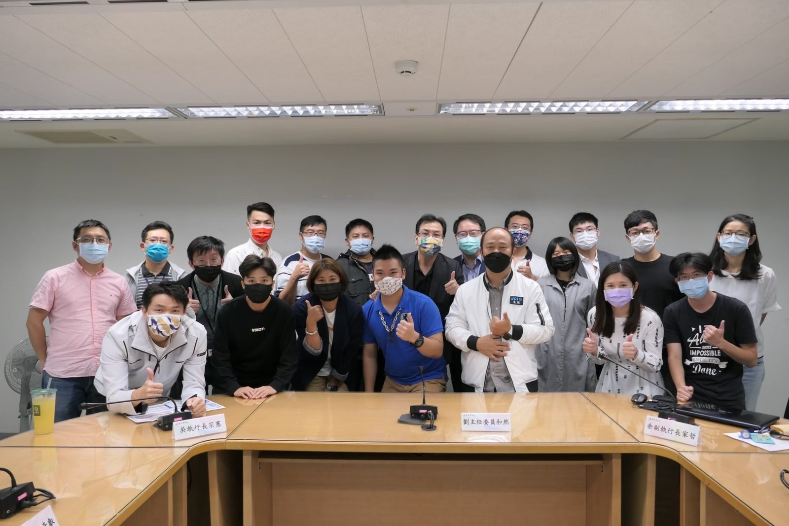
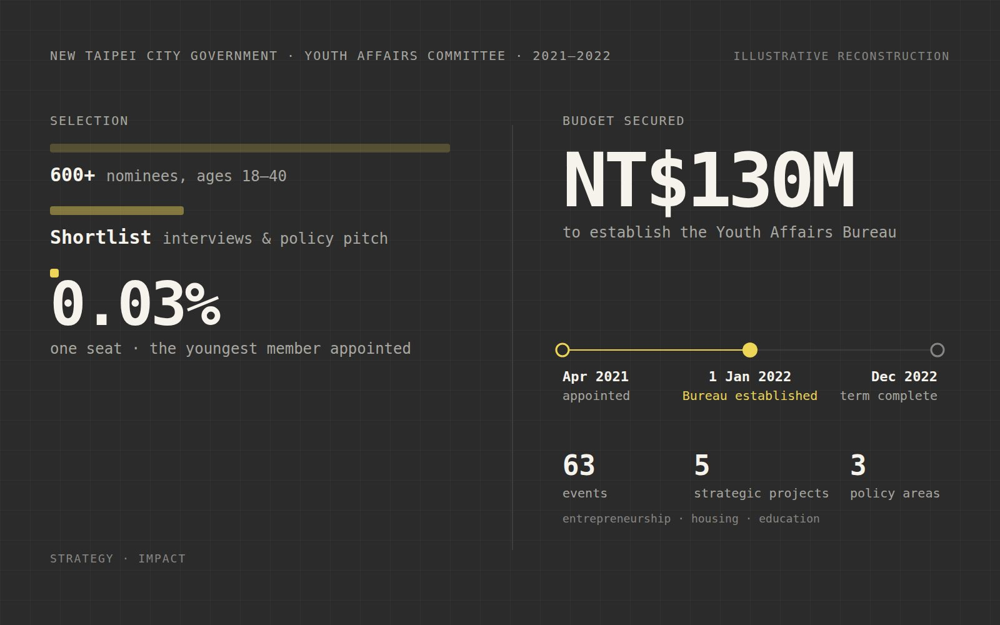

New Taipei is Taiwan’s most populous city, and its Youth Affairs Committee is the body that puts young people’s priorities in front of the mayor and the departments that fund them. In 2021 the city opened the committee to public nomination; 600+ people applied. I was selected as the youngest member, representing residents aged 18–40.
Commissioners don’t run programs — they shape them. My job was to turn scattered youth needs into concrete policy proposals, argue for them in budget discussions, and then make sure the money turned into things young people could actually use.
Structured input from student groups, young founders and NGOs across the city’s districts, turned into three policy tracks: entrepreneurship, housing, and education.
Worked with fellow commissioners and city staff on the proposal that secured NT$130M to establish a dedicated Youth Affairs Bureau — a permanent home for youth policy rather than a committee that meets a few times a year.
Designed and supervised 63 youth-focused events and five strategic projects, engaging hundreds of teams nationwide.


The bureau is now a standing part of city government. For me it was the first time I saw a policy argument turn into an institution — and the reason I still start every strategy problem by asking who has to fund it.